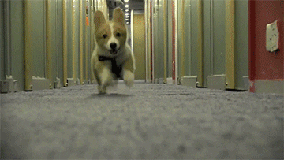
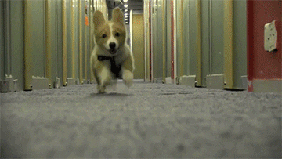

Provide a safe and loving home
Need a fluffy companion?
Opportunity of Support
The charity works to protect the relationship between the owner and the pet as the idea of having to give up a loved animal causes significant suffering to someone who is already in a distressed position. Owners having no choice but to lose their closest companion is heartbreaking especially when also considering the animals feeling of abandonment, hunger, suffering and loss of love. Therefore, we need your support to help protect a loved one's companion temporarily by providing a safe and secure home environment. Too many times have homeless owners had to leave their pets off the street just to spend one night at a hostel as many do not allow animals inside. Looking after a pet could be as little as anywhere between a couple of weeks or a few months.
Change Lives
Majority pets of the homeless are usually dog companions as they are loyal and can provide an enriched impact on your life. It is a terrible choice for many homeless people across Australia forced to keep their pet and stay on the streets, or surrender the animal to get a rental home. In being a foster carer you could improve the unfortunate owner's impact of happiness by feeling security and comfort, knowing their best friend is being taken good care of by you. If dogs are being kept in shelters, it can significantly decrease their socialness and friendly behaviour by being locked up in a small cage waiting to be euthanised. You have the opportunity to avoid this situation by donating your time and home to a pet in need of love and warmth.

 
